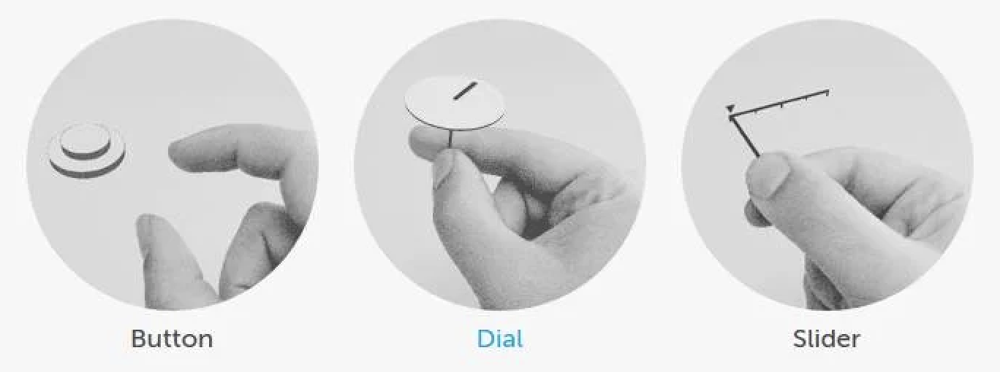
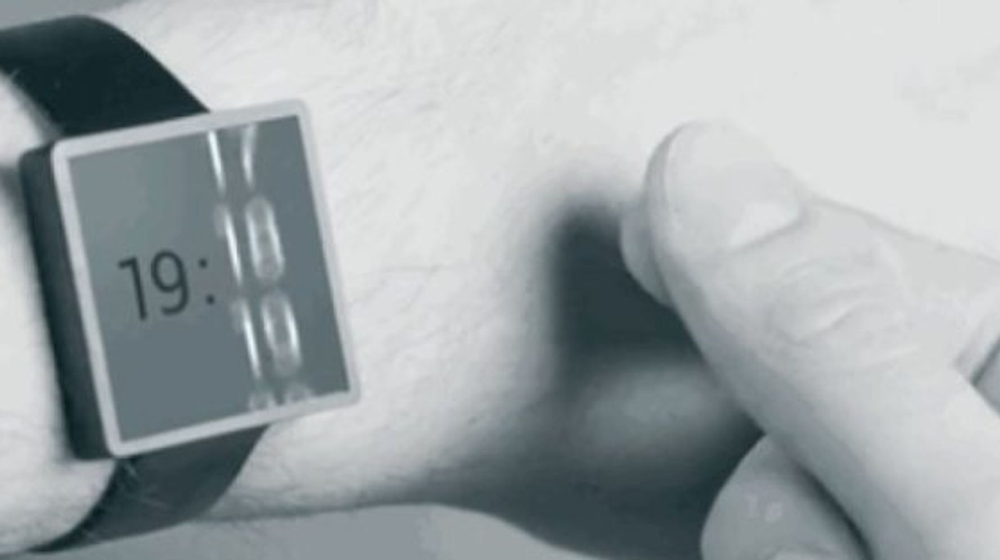
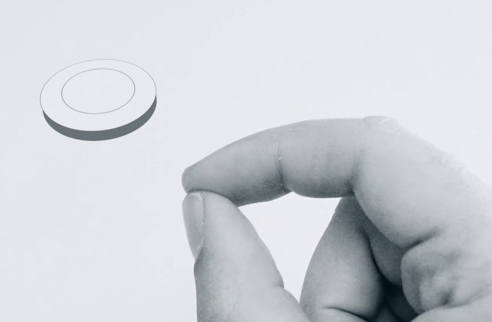
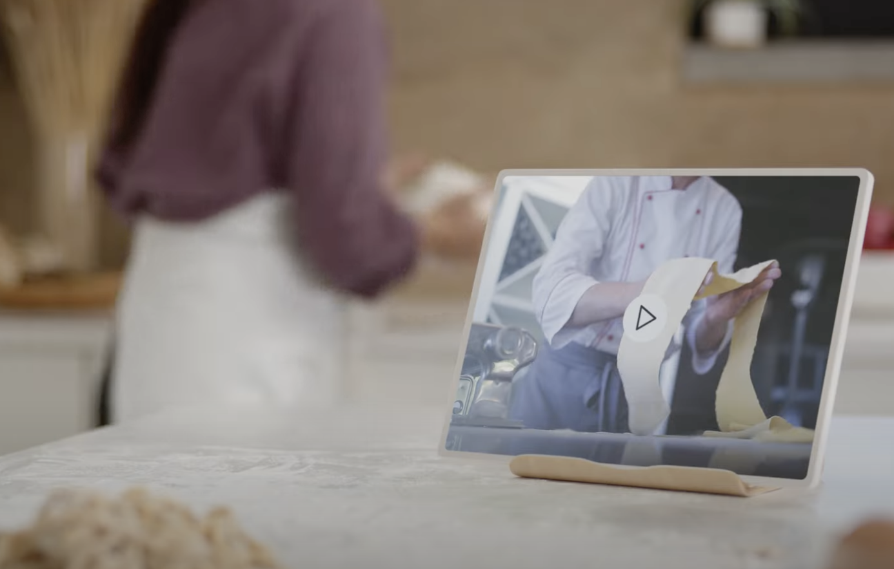

1.- ¿Qué es el chip Soli?
El Chip Soli nace de un proyecto de Google, presentado en 2015 durante una sesión en su I/O Developer Conference. Desde entonces, la división ATAP (Tecnología y Proyectos Avanzados) de Google ha estado desarrollando esta tecnología, que se puede utilizar en dispositivos portátiles, teléfonos, automóviles, computadoras y dispositivos de loT.
Es un chip especialmente diseñado para rastrear movimientos humanos en varias escalas, desde los latidos del corazón hasta los movimientos de su cuerpo. Para ello utiliza un radar diminuto capaz de seguir el movimiento en tiempo real de la mano humana, a altas velocidades y con gran precisión.
2.- Características
La idea principal del proyecto consistía en crear un radar lo suficientemente pequeño como para caber en un reloj inteligente. Tras años de investigación, se logró la construcción del chip y de la plataforma Soli, fusionándolos en un solo componente sólido que se puede integrar en los distintos dispositivos de consumo, pues el último tan solo mide 5,5x6mm capaz de incorporar el sensor y la matriz de Atenas en un solo dispositivo, lo que permite incluirlo en los dispositivos portátiles más pequeños.
Gracias a los radares de Project Soli, se podría controlar un teléfono móvil mediante gestos. Estos serían controlados por el radar y no por la cámara del teléfono móvil. Por tanto, se podría prescindir de la lámina táctil de las pantallas de los teléfonos móviles. Esto la haría más delgada aún y manejable, a la vez que abarataría su fabricación.
Además, cualquier superficie podría convertirse en una superficie activa con este radar, desde la pantalla hasta los marcos, e incluso la trasera del teléfono. Las posibilidades son enormes
Ventajas
-
Propósito general
Soli es capaz de detectar materiales, superficies, movimientos
-
Baja potencia
El bajo consumo de energía permite una detección siemrpe activa
-
Invisible
Puede ser colocado de forma invisible dentro de las carcasas de los dispositivos porque se propaga a través de los materiales
-
Privado
Al utilizar un radar que funciona con ondas electromagnéticas, en lugar de una cámara, no captura ninguna imagen visual, lo que proporciona privacidad al usuario.
-
No necesita luz
Como identifica los gestos mediante ondas electromagnéticas, y no por cámara de vídeo, puede ser utilizado en casos de que la luz se vea reducida o incluso en completa oscuridad.
Desventajas
-
Limitaciones
Por un lado, el rango de movimientos capaz de percibir es limitado, lo que se podría solucionar ampliando y mejorando el número de algoritmos con los que trabaja
-
Accesibilidad
Puede que algunas personas con discapacidades que afecten al movimiento vean limitada la interacción con los dispositivos que utilizan el chip Soli. Sin embargo, como este se basa en los movimientos que hacemos para interactuar con el dispositivo, estos usuarios se verían en la misma tesitura en el caso de que no estuviera.
-
Coste de adaptación
Los humanos son seres de costumbres a los que les cuesta adaptarse a los cambios radicales, por los que llevaría un tiempo aceptar el uso del chip Soli y sus gestos. Y más aún para sustituir a las pantallas táctiles
Apple Watch tiene la corona digital física que proporciona a los usuarios navegar por la interfaz de WatchOs. Sin embargo, con el chip Soli, no sería necesaria, pues se podrían mover los dedos para hacer todas las funcionalidades, desde bajar un marcador de volumen para disminuirlo, presionar un botón para girar, o hasta navegar por las distintas apps
Además, el Chip Soli no sólo serviría para convertir al ser humano en su propia interfaz, pues esun radar que detecta tanto movimientos pequeños como grandes. Esto permite que pueda utilizarse con motivos de seguridad o para hacer funciones automáticas como aumentar el volumen de los altavoces cuando se detecte gente de pie, apagar el televisor cuando no hay nadie al frente por un determinado tiempo, enviarte notificaciones al móvil cuando tu familia o mascotas se hayan despertado (adiós a las webCam), identificar si en una sala se encuentran ladrones o mascotas y activar o no la alrma (sin necesidad de observarte mediante una cámara), etc.
3.- Funcionamiento
El chip soli utiliza una tecnología de aprendizaje automático. De esta forma, Soli puede comprender una amplia gama de movimientos posibles.
-
Emite
Utiliza un radar, que emite ondas electromagnéticas en un haz amplio, donde los objetos, como puede ser una mano humana, dentro del haz, dispersan esta energía, reflejando una parte hacia la antena del radar
-
Refleja
Después se captura la información valiosa. Las propiedades de la señal reflejada, como la energía, el tiempo de retardo y el cambio de frecuencia, capturan la información valiosa sobre las características y comportamientos del objeto, incluyendo el tamaño, forma, orientación, material, distancia y velocidad
-
Reconoce
Por último, se encarga de reconocer los movimientos, para lo cual utiliza una tecnología de lenguaje automático. Al procesar las variaciones temporales y otras características capturadas de la señal, Soli puede distinguir entre movimientos complejos para comprender el tamaño, forma, orientación, material, distancia y velocidad del objeto dentro de su campo.
Pasos
Comprensión espacial
La interacción de Soli implementa distintas etapas algorítmicas de aumento de la abstracción de datos desde la señal de radar sin procesar hasta las etiquetas de gestos específicas de la aplicación. Para ello, se utilizan varias etapas de abstracción de señales (desde datos de radar sin procesar hasta la transformación de señales), una infraestructura de capacitación de aprendizaje automático personalizada para funciones de abstracción, detección y seguimiento, probabilidades de gestos, y herramientas de interfaz de usuario para interpretar los controles de gesto.
- Gesto
- Señal sin procesar
- Tprocransformación de señal Soli
- Clasificación de gestos
- Gesto de deslizamiento detectado
Una vez que un usuario expresa movimientos de sus dedos y manos para simular gestos dinámicos, el paradigma de detección de radar entra en escena para rastrear y reconocer los gestos. Este paradigma de detección de radar incluye hardware, software y algoritmos personalizados. Suss principios fundamentales de detección se basan en la resolución de movimiento al extraer cambios sutiles en la señal recibida a lo largo del tiempo, lo que a su vez le permite distinguir movimientos complejos de los dedos y formas deformes de la mano dentro de su campo.
4.- Importancia: más allá de los wereables
Hoy en día, los ordenadores se encuentran en todas partes. Google ATAP, ha estado pensando en cómo interactuamos con los dispositivos, para darle una vuelta a la interacción persona ordenador.
Gracias a la tecnología del radar Soli y de algortimos avanzados capaces de interpretar los datos recogidos, se pueden crear dispositivos inteligentes controlados por el movimiento de las manos o de la cabeza
En el proyecto, se han basado en la forma de interactuar de los humanos, intuitivamente, sin decir a veces una simple palabra. Hay determinados gestos que provocan una reacción inmediata, por tanto, ¿Qué pasaría si los ordenadores fueran capaces de entenderlo también?
Algoritmos
El chip Soli se permite a los dispositivos entender el contexto social que les rodea. Los algoritmos pueden estimar la orientación de la cabeza del usuario, lo que le permite predecir cómo y cuándo querrá interactuar o prestar atención.
- 'Aproach and leave' (acercarse e irse), permite al dispositivo entender cuándo es el momento perfecto para iniciar una conversación por ejemplo: el dispositivo podría notar si alguien se acerca simplemente porque está pasando próximo al objeto, sin intención de interactuar con él, o si se está acercando para llevar a cabo una interacción, como al iniciar una conversación.
- 'Turning toward/away' (acercándose/apartándose), permite puede crear un diálogo más natural entre los usuarios y los dispositivos.
- 'Glance' (vistazo), permite al dispositivo entender cuándo un usuario está captando su atención.
Estos dispositivos están diseñados para atendernos desde un segundo plano, de forma tranquila y respetuosa. Puede tener interacciones que son útiles, pero no molestas, pues la tecnología tiene el contexto suficiente como para reconocer las señales y ajustarse a las necesidades en el momento.
Poco a poco, a medida que estos dispositivos se integran en objetos cotidianos, imaginamos un futuro en el que los productos tengan esta inteligencia social. La experiencia puede ser increíble, pues se dispondrán de dispositivos que nos entiendan y participen en nuestra vida cotidiana de una forma más considerada, integrada, cómoda y agradable.
Por ejemplo, en estas imágenes se puede observar a una mujer cocinando mientras ve un video de una receta. Cuando se aleja de la pantalla para lavarse las manos o cortar verduras en otro lugar de la cocina, el vídeo se pone en pausa sin necesidad de que lo pausemos nosotros.
El dispositivo entiendentiende que ya nos hemos alejado ('Aproach and leave'), que no le estamos mirando ('Turning toward/away') y que el usuario ha dejado de prestar atención al vídeo ('Glance').
En definitiva, se describe una nueva forma de interactuar con los dispositivos. Al igual que en su día se inventaron los botones, teclados, mandos a distancia, o pantallas táctiles. Esta vez, la tecnología, además de permitirnos un medio nuevo de interacción con los ordenadores, gracias a los algoritmos, les permite interpretar nuestros gestos y acciones para entender el contexto del momento. Lo que hace que los campos de trabajo de utilidad del proyecto Soli sean inmensos.
Más información sobre chip Soli
Título
Enlace
Tipo de información
Google ATAP: Project Soli; Usted es la única interfaz que necesita
https://atap.google.com/soli/
Página oficial de Google ATAP donde se presenta el Proyecto Soli
Google ATAP: Welcome to Project Soli
https://youtu.be/0QNiZfSsPc0
Vídeo explicativo introductorio sobre el proyecto Soli llevado a cabo por Google ATAP
Google ATAP: Nonverbal Interactions with Soli Radar
https://youtu.be/r-eh2K4HCzI
Vídeo explicativo sobre el Chip Soli, cómo entiende las interacciones no vervales del ser humano
Google's Project Soli: Controlling devices using hand gestures (CNET News)
https://youtu.be/Na89OzXllkk
Vídeo con demostración del uso de Chip Soli en smartWatch y altavoces
| Título | Enlace | Tipo de información |
|---|---|---|
| Google ATAP: Project Soli; Usted es la única interfaz que necesita | https://atap.google.com/soli/ | Página oficial de Google ATAP donde se presenta el Proyecto Soli |
| Google ATAP: Welcome to Project Soli | https://youtu.be/0QNiZfSsPc0 | Vídeo explicativo introductorio sobre el proyecto Soli llevado a cabo por Google ATAP |
| Google ATAP: Nonverbal Interactions with Soli Radar | https://youtu.be/r-eh2K4HCzI | Vídeo explicativo sobre el Chip Soli, cómo entiende las interacciones no vervales del ser humano |
| Google's Project Soli: Controlling devices using hand gestures (CNET News) | https://youtu.be/Na89OzXllkk | Vídeo con demostración del uso de Chip Soli en smartWatch y altavoces |